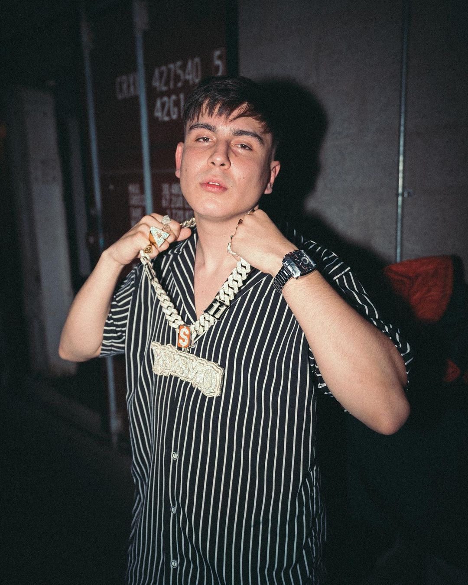
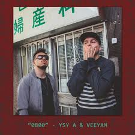

"El Hombre Sismo"
Alejo Nahuel Acosta, más conocido artisticamente como YSY A, es un
rapero argentino nacido el 12 de julio de 1998 en el barrio de Villa Crespo, Buenos Aires.
Con
padres uruguayos, y el Rio de La Plata recorriendo por toda su sangre, desde muy pequeño se vio
interesado por la musica, en especial por el tango.
Donde encontraria su amor por el rap fue en el
centro cultural "El Eternauta" donde se desarrollaban actividades relacionadas al Hip Hop. Ahi es donde
aprenderia a hacer BeatBox y a Improvisar, conocido tambien como Freestylear.
En ese momento solo
existia una competencia de freestyle, llamada El Halabalusa, ubicada en Claypole, lugar que le quedaba
muy lejos a Ysy. Esto lo motivo a crear su propia competencia, que iba a tener lugar en el Parque
Rivadavia, localizada en el centro de la ciudad.
Con tan solo 13 años crearia lo
que conocemos hoy en dia como
"El Quinto Escalon"
El Quinto Escalon

Creado por YSY A y Muphasa (Matias Berner), un aspirante a musico y presentador de radio, fue el evento
de freestyle argentino mas conocido a nivel mundial. Éste dio a conocer a muchos artista que hoy en dia
son reconocidos a nivel internacional, como pueden ser Duki, Paulo Londra, Trueno, Wos, etc.
Tuvo su
primera fecha el 11 de marzo de 2013, de la cual no hay registro, y su finalizacion fue el 11 de
noviembre de 2017, con un evento en el Microestadio Malvinas Argentinas.
Entre 2014 y 2015 la competencia se establecería como la más importante de Buenos Aires, a la par de
que empezarían a aparecer los primeros competidores que luego se volverían claves en la viralización del
torneo, como Wos o Acru. Desde la primera mitad de 2015, la
competencia promediaba entre 30 mil y 50 mil espectadores en YouTube. A partir de la segunda mitad, la
media subió a 100 mil, principalmente impulsada por la nueva camada de raperos jóvenes que le brindaron
un "soplo de aire fresco" a la competencia, como Duki, Dam o
Dani.
2016 fue un año super importante para esta competicion, ya que se empezo a
cobrar la entrada al publico. Esto fue un beneficio enorme porque se pudo mejorar tanto la calidad de
los videos de las batallas, como la logistica y la organizacion del mismo evento. En este mismo año
tambien aparecieron nuevos raperos como Trueno, Lit Killah o Replik quienes vinieron a reemplazar a la
vieja escuela.
Pero todo tiene un final, y en 2017 se tomo la decision de mudar la competencio de
plazas a escenarios. Esto no gustó mucho en el publico ya que se perdió una de las esencias que hacia
especial al evento.
Pasaron los meses y la relacion entre Muphasa e Alejo se iria deteriorando a raiz de varios conflicto.
Esto dio pie a que Alejo intentara impulsar su carrera musical bajo du seudónimo YSY A, y Muphasa
enbarcandose en su carrera como presentador de radio.
Su primera cancion
Luego de su desviculacion con las competiciones, Alejo decidio poner todo en su carrera musical. Asi fue
como a finales del 2017, junto a la produccion de Veeyam, saca su primer tema "0800".
Gracias al exito de "0800" decidio lanzar nueva musica, como "Quiero Ganarme la Vida" u "Otro
Level", junto a Duki. Al ver que el exito musical que estaba teniendo Duki, decide realizar una gira
autogestionada por toda la provincia de Buenos Aires. A esta gira tambien se sumaria Neo Pistea, y
justos fomarian el grupo "Modo Diablo".